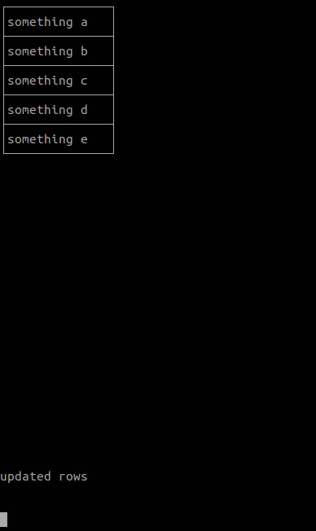
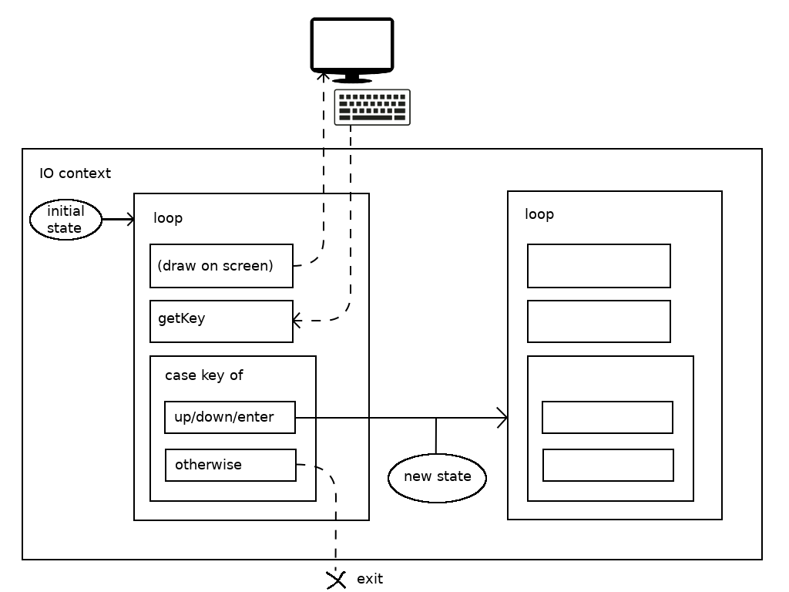
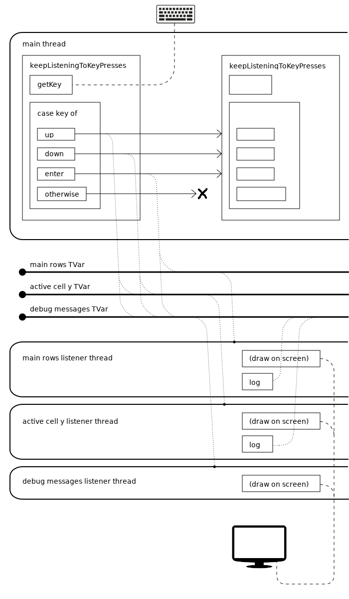
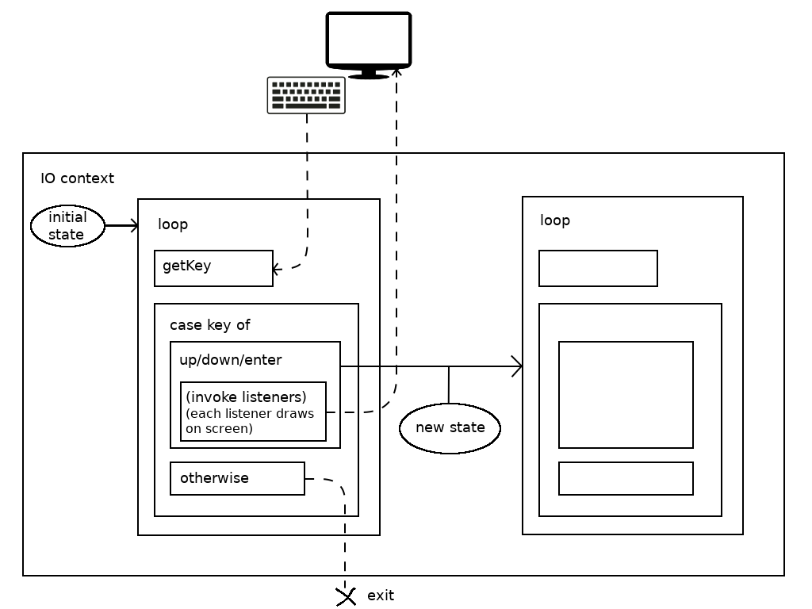
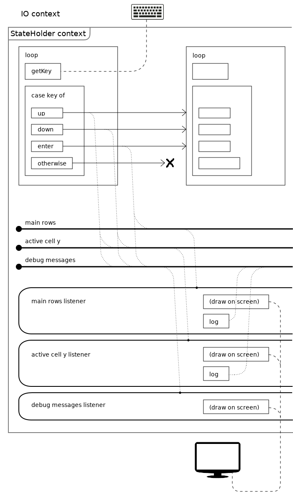
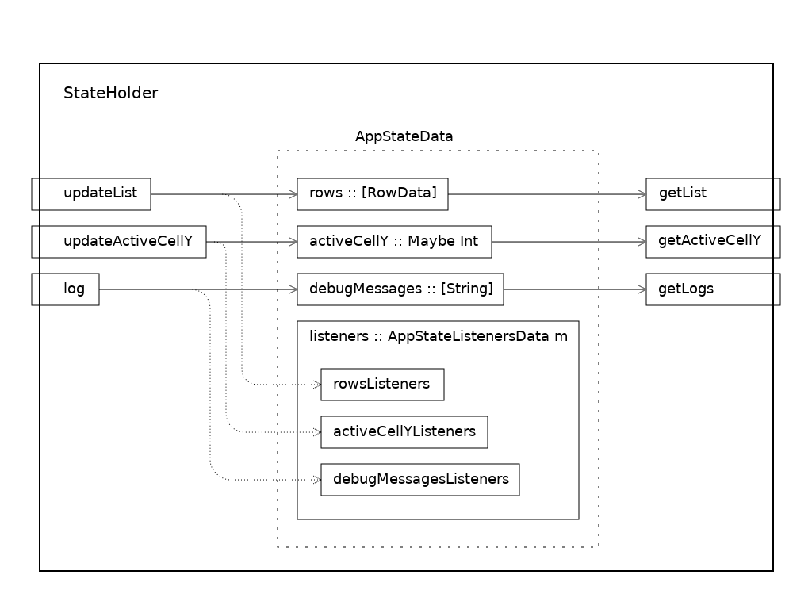

Console List GUI in Haskell

Here is a question: which options do we have for designing (an architecture of) an application which shows a list of strings in console gui, allows to edit strings in an edit field that appears next to a list, and shows logs, and which design would you choose?
Let's play a game: there are some variations of console list application architecture listed in this article. If you come up with some new architecture, which is not listed in here, then I owe you an imaginary glass of beer. And if it is listed in the article, then you owe me one.
You have at your disposal functions that draw strings, rectangles and grids on the screen in console: https://gist.github.com/shiraeeshi/70e447fbbb5ae9a6ba1bf1c0c9bdd2cf
Also the function to register key button press events is given: https://gist.github.com/shiraeeshi/6aa2055d840297b1d55fac2e11b72e12
You can copy-paste the above code into your project.
Also you would need to add this dependency to the project:
- ansi-terminal >= 0.10.3
A more thorough definition of a program.
There is a list, we need to show it on screen, allow to select and edit a string.
In order to select a string, a user presses "up" and "down" arrow keys, and then goes to edit mode by pressing "enter".
In edit mode an edit field appears to the right of the list.
After finishing editing, a user presses "enter" - an edit field becomes invisible, and we see a list with corresponding value refreshed.
Below the list the logs are shown. In those logs we describe what was redrawn: whether it was the whole list, the grid or maybe a single row in a list.
Don't worry about adjusting the width of a list to the length of strings, you can use fixed width. Also don't worry about the height of a list or the height of the logs container, let's show 5 items in a list and you can use fixed height.
You can use a library or you can reinvent what the library does, it's up to you.
The idea of the game is that you put this article aside and start writing your version of console strings list, and after you finished that, come back to the article.
Good luck!
~~~~~~~~~~~~~~~~~~~~~~~~~~~~~~~~~~~~~~~~~~~~~~~~~~~~~~~~~~~~~~~~~~~~
Background
8 months ago I wrote an article about console tetris that I wrote in haskell.
----------------------------------
(The introduction from the console-tetris article)
There's a tradition to print Hello World to the console when beginning learning a language. Let's call printing Hello World to the console a first level of interactivity. A next level is when a program gets an input from a user and prints the result to the console. Sounds similar to the way functions work.
One of the merits of a functional style is said to be the fact that functions don't produce side effects. Side effects have the potential to over-complicate the code, making it resemble a bowl of spagetti (it is called spagetti-code), and unwanted side effects are errors, bugs. When we use functions, we don't have side effects, so from the beginning we eliminate the possibility of introducing an unwanted side effect into the code.
Sounds convincing, but what does it look like in practice when we're dealing with something more sophisticated than Hello World or a console calculator?
We want to write something complex and intertwined in functional style and check if spagetti is going to get untangled because we used functions, and if so, what will it look like?
Are we going to write some UI or a server, or maybe an operation system kernel? It would be too far of a jump on a learning curve, which seems to be pretty steep in haskell's case. We got to flatten the learning curve.
It's got to be console application. But here is a thing: how are we going to test if functions help us untangle the code, given that console works similar to functions in line-by-line input-output mode?
This article helps us resolve the problem: http://eed3si9n.com/console-games-in-scala
It describes:
- control sequences of symbols that let us print in any location on screen, rather than line by line.
- how to read arrow button pressed events.
In this way it's possible to use console on a higher level of interactivity.
----------------------------------
I've been reading parconc and monadbook books during these 8 months.
("Parallel and Concurrent Programming in Haskell" by Simon Marlow: https://www.oreilly.com/library/view/parallel-and-concurrent/9781449335939/ch01.html)
("The book of monads" by Alejandro Serrano Mena)
Various designs I used listed in chronological order:
tetris (no observer, global redraw)
observer on tvars (observer-by-stm-tvars-editable-list)
global redraw and no observer (hs-editable-list-with-global-redraw-and-no-observer)
observer in io monad (hs-editable-list-with-observer-primitive)
monadic:
- final style
- initial style
- free
- operational style
- freer
Various ways of creating custom monads are described in another post, I used final style in this post.
In the article about console tetris I wrote:
----------------------------------
At this point in our coding journey we are reminded that we are coding in functional style with no side effects and with immutable structures.
In java a timer could alter some object's state through side effects visible from other threads.
But haskell challenges us to think about a puzzle.
(If you know any interesting ways of solving this problem, let us know).
----------------------------------
I'm still playing with this puzzle and collecting various solutions to this problem, just need to clarify: there are side-effects in functional style.
Functional style has a broader meaning that the lack of side-effects: functional style is when the type system helps you to distinguish between side-effecting imperative code and a pure code without side-effects.
A program in functional style comprises of pure sub-systems, embedded in imperative framework. You either get that framework (pre-baked, so to speak) from somewhere, or you create it by yourself. Various ways of creating that framework are the subject of this post.
Why a list of strings?
I decided to formulate a task like this, because it is one of the simplest tasks with following characteristics:
- it needs to manage some state.
- it needs to show a gui.
- we can use an observer pattern.
Actually, the part about using an observer pattern was the main motivation for experiments: I was wondering whether it is possible to translate the "observer" pattern, familiar from OOP, to the functional paradigm, and if possible, how to do that.
Perhaps some readers are convinced that we don't need observers in fp. If the reader has this opinion and knows how, without observers, to make some part of a system react to events emitted by other part - it would be interesting to read his comment or an article about that. And if the user decides to demonstrate the approach applied to showing a list of strings in console - that would be even better.
I think that we can use the console list of strings as a standart task, to demonstrate various approaches and designs. Examples: hello world, word count in map-reduce field ("WordCount is a simple application that counts the number of occurrences of each word in a given input set."). Other examples?
The point is that when someone (or you) is trying to explain some approach, a paradigm or a library, we can say: "ok, show us an example of console list of strings".
What other standart tasks can we come up with, to make them gradually more complex? For example, some application with gui or with no gui, which needs to manage more than one entities as a state. What if the listeners need to work in different contexts, different monads?
I need new ideas or a way of generating ideas.
questions:
- how to visualize monads, transformers, etc. If we view monads as contexts, we can visualize them as rectangles, but some places are hard to visualize, for example, the relationships between monad actions and IO-actions. I created diagrams for this project, but I'm not sure if this approach of visualizing is going to scale to more complex architectures. Any ideas or recommendations?
- new ideas of experiments. I heard about meta-tutorial and "What I wish I knew" page, I need something like that but little different: I imagine something like a tree (or a graph): the root is HelloWorld (or some expressions in repl), there are nodes like console calculator, console strings list, the deeper you go the more complex and specialized (or multi-specialized) the tasks become. The multithreading branch starts with a simple task, something like a multithreaded console strings list. And some nodes contain text that you don't understand the first time you read it, but after you've read some materials, you read the text again and understand it. Perhaps there are roadmaps like that somewhere in the internet, and if it doesn't exist yet, let's create it (but I hope it exists).
- how does perform-recursive-monadic-loop work (see the readme in https://github.com/shiraeeshi/hs-perform-recursive-monadic-loop)
Let's start with data.
Representing a list in code and auxiliary code
Initial values in the list:
initialRows = [ Row "something a" , Row "something b" , Row "something c" , Row "something d" , Row "something e" ]
A row is defined like this:
data RowData = Row { smth :: String } deriving Eq
Some settings in main (needed for drawing on screen as in gui mode):
hSetBuffering stdin NoBuffering hSetBuffering stdout NoBuffering hSetEcho stdin False
The getKey function reads key button press events from the terminal:
getKey :: IO [Char] getKey = reverse <$> getKey' "" where getKey' chars = do char <- getChar more <- hReady stdin (if more then getKey' else return) (char:chars)
Functions that draw on screen are contained in the ViewUtils module.
clearScreen
showInRectangle
clearRectangle
showInGrid
highlightCell
printFromBottom
The drawGrid function was added later, it was extracted from showInGrid function. We need this function to not have to redraw all strings when the cursor of "selected row" moves up and down: we can redraw only the grid instead. Our goal is to redraw only those elements that need to be redrawn.
~~~~~~~~~~~~~~~~~~~~~~~~~~~~~~~~~~~~~~~~~~~~~~~~~~~~~~~~~~~~~~~~~~~~
Global redraw and no observer

In this approach a program essentially is nothing but a big loop, represented as a recursive function. A program's state is represented as parameters of that recursive function.
The main function invokes the loop:
loop :: [RowData] -> (Maybe Int) -> [String] -> IO () loop rows activeCellY debugMessages = do ...
The loop function draws on screen, then reads the key press event from terminal and reacts to it by recursively calling itself with new parameters.
(By the way, I used this approach in console tetris. A need to periodically generate ticks adds to the complexity of a task there, but the main idea is the same.)
The problem with this approach is that the loop redraws the whole screen in every iteration, even if we can redraw only some parts of the screen.
~~~~~~~~~~~~~~~~~~~~~~~~~~~~~~~~~~~~~~~~~~~~~~~~~~~~~~~~~~~~~~~~~~~~
Observer on tvars

Even though we don't really need multithreading in this application, my experiments with listeners started with this design that uses TVars.
I've been thinking about translating listeners to a functional paradigm, but had no idea how to do that, it was hard to imagine something other than a big recursive function that redraws the whole screen in each iteration. A chapter about STM and TVars in the parconc book helped to get out of that dead-end. It even literally uses the word "observer" couple of times - what could be more obvious hint than that!
----------------------------------
"No other thread can observe an intermediate state in which only some of the operations of the transaction have taken place."
"... operations that modify the state (would) have to know about the observers that need to act on changes."
----------------------------------
Here is how this design works:
- all the fields that represent the application's state are wrapped in TVars.
- each listener runs in its own thread as a loop, a recursive function that draws some part of a gui on screen, and then waits for the corresponding value (the observable) to change before moving to the next iteration.
- new values to TVars get written from the main thread that reads button press events.
A data type that represents the state of the application:
data AppStateData = AppState { mainRows :: TVar [RowData] , highlightedRowIndex :: TVar (Maybe Int) , debugMessages :: TVar [String] , redrawLock :: MVar () }
redrawLock and the bracketInLock function are needed to prevent threads from drawing simultaneously on console.
The main function performs following actions:
- creates initial state
- declares and starts listeners in their threads (one listener per TVar)
- clears the screen
- invokes the keepListeningToKeyPresses function
----------------------------------
- creates initial state
state@(AppState mainRowsTV highlightedRowIndexTV debugMessagesTV redrawLock) <- do mainRows <- atomically $ newTVar initialRows debugMessages <- atomically $ newTVar ([] :: [String]) highlightedRowIndex <- atomically $ newTVar Nothing redrawLock <- newLock return $ AppState mainRows highlightedRowIndex debugMessages redrawLock
----------------------------------
- declares and starts listeners in their threads (one listener per TVar)
- logs listener:
forkIO $ do let loop debugMessages = do bracketInLock redrawLock $ printFromBottom xUpperLeft (yUpperLeft+12+debugLinesCount) debugMessages newDebugMessages <- atomically $ do newDebugMessages <- readTVar debugMessagesTV if newDebugMessages == debugMessages then retry else return newDebugMessages loop newDebugMessages debugMessages <- atomically $ readTVar debugMessagesTV loop debugMessages
- the list listener:
(as opposed to the primitive proto-listeners approach, listeners can also change state (log) in addition to being able to draw on screen)
forkIO $ do let loop rows = do activeCellY <- atomically $ readTVar highlightedRowIndexTV let activeCellCoords = fmap (\y -> (0, y)) activeCellY bracketInLock redrawLock $ showInGrid xUpperLeft yUpperLeft columnCount columnWidth activeCellCoords (map (\row -> [smth row]) rows) atomically $ do debugMessages <- readTVar debugMessagesTV let msg = "main rows listener: updated view" writeTVar debugMessagesTV $ take debugLinesCount (msg:debugMessages) newMainRows <- atomically $ do newMainRows <- readTVar mainRowsTV if newMainRows == rows then retry else return newMainRows loop newMainRows mainRows <- atomically $ do rows <- readTVar mainRowsTV return rows loop mainRows
- currently selected row listener:
forkIO $ do let loop activeCellY = do let activeCellCoords = fmap (\y -> (0, y)) activeCellY bracketInLock redrawLock $ do drawGrid xUpperLeft yUpperLeft columnWidth columnCount rowCount case activeCellCoords of Nothing -> return () Just coordsPair -> highlightCell xUpperLeft yUpperLeft columnWidth columnCount rowCount coordsPair atomically $ do debugMessages <- readTVar debugMessagesTV let msg = "selected cell listener: updated highlighted cell" writeTVar debugMessagesTV $ take debugLinesCount (msg:debugMessages) newActiveCellY <- atomically $ do newActiveCellY <- readTVar highlightedRowIndexTV if newActiveCellY == activeCellY then retry else return newActiveCellY loop newActiveCellY activeCellY <- atomically $ readTVar highlightedRowIndexTV loop activeCellY
----------------------------------
- clears the screen
We need to acquire the lock before doing anything with the screen.
bracketInLock redrawLock clearScreen
----------------------------------
- invokes the keepListeningToKeyPresses function
the keepListeningToKeyPresses function reads key press events (using getKey function) and reacts to them:
keepListeningToKeyPresses state@(AppState mainRowsTV highlightedRowIndexTV debugMessagesTV _redrawLock) = do key <- getKey when (key /= "\ESC") $ do case key of "\ESC[A" -> do -- up atomically $ do activeCellY <- readTVar highlightedRowIndexTV debugRows <- readTVar debugMessagesTV let newActiveCellY = case activeCellY of Just y -> Just $ max 0 (y-1) Nothing -> Just 0 debugRow = "up, " ++ show(newActiveCellY) newDebugRows = take debugLinesCount (debugRow:debugRows) writeTVar highlightedRowIndexTV newActiveCellY writeTVar debugMessagesTV newDebugRows keepListeningToKeyPresses state
For example, the "up" arrow button handler writes new values to TVars and performs a recursive call to keepListeningToKeyPresses.
~~~~~~~~~~~~~~~~~~~~~~~~~~~~~~~~~~~~~~~~~~~~~~~~~~~~~~~~~~~~~~~~~~~~
Observer in io monad

Let's try to add something like a primitive proto-listener: because it is primitive, it will not run automatically, we will have to invoke it manually.
In addition to the fields that represent application's state we create another field and a data type that store listeners.
data AppStateData = AppState { rows :: [RowData] , activeCellY :: Maybe Int , debugMessages :: [String] , listeners :: AppStateListenersData } data AppStateListenersData = AppStateListeners { rowsListeners :: [[RowData] -> IO ()] , activeCellYListeners :: [Maybe Int -> IO ()] , debugMessagesListeners :: [[String] -> IO ()] }
Some helper functions to add listeners:
addRowsListener :: ([RowData] -> IO ()) -> AppStateListenersData -> AppStateListenersData addActiveCellYListener :: (Maybe Int -> IO ()) -> AppStateListenersData -> AppStateListenersData addDebugMessagesListener :: ([String] -> IO ()) -> AppStateListenersData -> AppStateListenersData
The main function does the following:
- creates initial state (and listeners)
- clears the screen
- in order to show the list for the first time, invokes the list listener
- calls the loop function
----------------------------------
- creates initial state (and listeners)
Listeners call functions from the ViewUtils module, which draw on screen. Notice how we don't log any messages from listeners, I write about it later in the section that lists some of the drawbacks of this approach.
let appState = AppState initialRows Nothing [] initListeners
initListeners :: AppStateListenersData -- initListeners = -- addRowsListener mainRowsListener -- (addActiveCellYListener activeCellYListener -- (addDebugMessagesListener debugMessagesListener -- (empty))) initListeners = addRowsListener mainRowsListener $ addActiveCellYListener activeCellYListener $ addDebugMessagesListener debugMessagesListener $ empty where empty = AppStateListeners [] [] [] mainRowsListener :: [RowData] -> IO () mainRowsListener rows = do showInGrid xUpperLeft yUpperLeft columnCount columnWidth Nothing (map (\row -> [smth row]) rows) activeCellYListener :: Maybe Int -> IO () activeCellYListener activeCellY = do let activeCellCoords = fmap (\y -> (0, y)) activeCellY drawGrid xUpperLeft yUpperLeft columnWidth columnCount rowCount case activeCellCoords of Nothing -> return () Just coordsPair -> highlightCell xUpperLeft yUpperLeft columnWidth columnCount rowCount coordsPair debugMessagesListener :: [String] -> IO () debugMessagesListener debugMessages = do printFromBottom xUpperLeft (yUpperLeft+12+debugLinesCount) debugMessages
----------------------------------
- clears the screen
clearScreen
----------------------------------
- in order to show the list for the first time, invokes the list listener
Since our recursive function doesn't redraw the whole screen in each iteration now, but redraws only those parts that were changed after reacting to key press events, we need to invoke the list listeners manually because if we didn't do that, the program would show us an empty screen and wait for the first key press event.
forM_ (rowsListeners (listeners appState)) $ \listener -> listener (rows appState)
----------------------------------
- calls the loop function
loop appState
The loop function reads the key press event and reacts to it (in this example and in later examples similar to this one, only the "up" button handler is shown):
loop :: AppStateData -> IO () loop appState@(AppState rows activeCellY debugMessages listenersHolder) = do key <- getKey when (key /= "\ESC") $ do case key of "\ESC[A" -> do -- up let newActiveCellY = case activeCellY of Just y -> Just $ max 0 (y-1) Nothing -> Just 0 debugRow = "up, " ++ show(newActiveCellY) newDebugRows = take debugLinesCount (debugRow:debugMessages) forM_ (activeCellYListeners listenersHolder) $ \listener -> listener newActiveCellY forM_ (debugMessagesListeners listenersHolder) $ \listener -> listener newDebugRows loop (AppState rows newActiveCellY newDebugRows listenersHolder)
Problems with this approach:
- the point of observers is to be able to change a state and to rely on the system that will invoke observers automatically, but here we invoke them manually
- we don't have access to the whole state, only to some part of it that the observer observes (we can fix that by passing a whole state as an additional parameter to the observer)
- we can't log from listeners, because logging changes state (we can fix that by making observers return a new version of a state, but how do we invoke listeners that need to react to changes made by other listeners?)
~~~~~~~~~~~~~~~~~~~~~~~~~~~~~~~~~~~~~~~~~~~~~~~~~~~~~~~~~~~~~~~~~~~~
Observer in custom monad

One of the approaches that don't have drawbacks of the primitive proto-listener approach is creating a custom monad for our operations. In the previous approach a list observer had a type [RowData] -> IO (), now it's going to have a type (Monad m, EditableListApp m) => [RowData] -> m (), it means that previously we invoked our listeners directly in IO monad, but now we're going to invoke them in the context of some abstract monad with the EditableListApp interface.
Data types that hold the state and listeners look like this. They are parameterized by the type of the monad that we're going to use as a context for running listeners.
data AppStateData m = AppState { rows :: [RowData] , activeCellY :: Maybe Int , debugMessages :: [String] , listeners :: AppStateListenersData m } data AppStateListenersData m = AppStateListeners { rowsListeners :: [[RowData] -> m ()] , activeCellYListeners :: [Maybe Int -> m ()] , debugMessagesListeners :: [[String] -> m ()] }
Helper functions that add listeners:
addRowsListener :: (Monad m, EditableListApp m) => ([RowData] -> m ()) -> AppStateListenersData m -> AppStateListenersData m addActiveCellYListener :: (Monad m, EditableListApp m) => (Maybe Int -> m ()) -> AppStateListenersData m -> AppStateListenersData m addDebugMessagesListener :: (Monad m, EditableListApp m) => ([String] -> m ()) -> AppStateListenersData m -> AppStateListenersData m
These functions declare that the m type should be a monad and should be an instance of EditableListApp typeclass. That's our custom monad.
You might wonder why we didn't add (Monad m, EditableListApp m) constraints to the AppStateData and AppStateListenersData data types and not just to functions that add listeners. The answer is I don't know how to do that, and since the code works without those constraints I'm not sure whether we should do that at all.
Creating a custom monad
(We can create monads using various approaches, or styles. The style described here is called final style.)
Creating a custom monad is like creating a new sub-language inside a language.
In order to create a language we need a syntax and semantics.
Syntax is a structure of our instructions.
Semantics is how we interpret that structure.
To put it more bluntly, we need to define words of our new language and a dictionary to translate to other languages.
(It means that we have a lexicon and syntax on one side, and semantics, or interpretation, on the other side)
On the other hand, it looks like a good old story about an interface and an implementation, so familiar to us from OOP.
We define a typeclass that declares monad's functions (new words of our new language):
class EditableListApp m where getList :: m [RowData] getActiveCellY :: m (Maybe Int) getLogs :: m [String] updateList :: [RowData] -> m () updateActiveCellY :: Maybe Int -> m () log :: String -> m ()
What do the signatures of the functions we just listed mean?
Operations that return results, return results in the context of m monad:
getList :: m [RowData] getActiveCellY :: m (Maybe Int) getLogs :: m [String]
Operations that perform effects, perform those effects in the context of m monad:
updateList :: [RowData] -> m () updateActiveCellY :: Maybe Int -> m () log :: String -> m ()
Interpretation

We need another language to translate our words to. Here it is: the IO monad wrapped (or transformed) with StateT monad transformer. We're going to interpret actions from the custom monad to this monad:
newtype StateHolder a = StateHolder (StateT (AppStateData StateHolder) IO a) deriving (Functor, Applicative, Monad, MonadIO)
The interpretation (looks more like a definition of words) is declared as an instance of a typeclass:
instance EditableListApp StateHolder where getList = StateHolder $ rows <$> get getActiveCellY = StateHolder $ activeCellY <$> get getLogs = StateHolder $ debugMessages <$> get updateList l = do StateHolder $ modify $ \s -> s { rows = l } reacts <- StateHolder $ (rowsListeners . listeners) <$> get forM_ reacts ($ l) -- same as forM_ reacts $ \react -> react l updateActiveCellY y = do StateHolder $ modify $ \s -> s { activeCellY = y } s <- StateHolder $ get let reacts = activeCellYListeners (listeners s) forM_ reacts ($ y) -- same as forM_ reacts $ \react -> react y log msg = do StateHolder $ modify $ \s -> s { debugMessages = take debugLinesCount (msg:(debugMessages s)) } logs <- StateHolder $ debugMessages <$> get reacts <- StateHolder $ (debugMessagesListeners . listeners) <$> get forM_ reacts ($ logs) -- same as forM_ reacts $ \react -> react logs
From the OOP perspective this design resembles an interface and an implementation, from our linguistic analogy perspective it looks like a dictionary or an interpreter that helps us translate (interpret) operations from the language of one monad (let's call it a descriptive monad) to the language of another monad (let's call it a target monad).
The performStateAction function translates the actions further to the IO monads language. We can imagine that it takes actions described in StateT monad's context and invokes them in the IO monad's context (actually, it doesn't really invoke them in IO-context, but merely translates them to IO-context, although I'm not sure about whether it invokes them or not. See my question about the perform-recursive-monadic-loop example):
performStateAction :: AppStateData StateHolder -> StateHolder a -> IO () performStateAction state (StateHolder action) = do runStateT action state return ()
The main function clears the screen, creates an initial state (and listeners), invokes, wrapping with performStateAction function call, the initRows and the loop function:
main :: IO () main = do hSetBuffering stdin NoBuffering hSetBuffering stdout NoBuffering hSetEcho stdin False clearScreen performStateAction initialState $ do initRows loop where ...
There is one thing in the performStateAction function's behavior that is not clear to me: seems like it doesn't wait for the loop function to return from recursion and runs the runStateT function on it's result, which shouldn't be ready yet because we're still in the recursion. How does that work?
I've isolated a minimalistic example of this behavior in this project: perform-recursive-monadic-loop (https://github.com/shiraeeshi/hs-perform-recursive-monadic-loop).
----------------------------------
- creating an initial state
initialState :: AppStateData StateHolder initialState = AppState [] Nothing [] initListeners
----------------------------------
- creating listeners:
initListeners :: AppStateListenersData StateHolder -- initListeners = -- addRowsListener mainRowsListener -- (addActiveCellYListener activeCellYListener -- (addDebugMessagesListener debugMessagesListener -- (empty))) initListeners = addRowsListener mainRowsListener $ addActiveCellYListener activeCellYListener $ addDebugMessagesListener debugMessagesListener $ empty where empty = AppStateListeners [] [] [] mainRowsListener :: [RowData] -> StateHolder () mainRowsListener rows = do activeCellCoords <- fmap (\y -> (0, y)) <$> getActiveCellY liftIO $ showInGrid xUpperLeft yUpperLeft columnCount columnWidth activeCellCoords (map (\row -> [smth row]) rows) log "updated rows" activeCellYListener :: Maybe Int -> StateHolder () activeCellYListener activeCellY = do let activeCellCoords = fmap (\y -> (0, y)) activeCellY liftIO $ drawGrid xUpperLeft yUpperLeft columnWidth columnCount rowCount case activeCellCoords of Nothing -> return () Just coordsPair -> do liftIO $ highlightCell xUpperLeft yUpperLeft columnWidth columnCount rowCount coordsPair log "highlighted cell" debugMessagesListener :: [String] -> StateHolder () debugMessagesListener debugMessages = do liftIO $ printFromBottom xUpperLeft (yUpperLeft+12+debugLinesCount) debugMessages
----------------------------------
- the strings list initialization:
initRows :: StateHolder () initRows = updateList initialRows
When initializing the list, we invoke updateList function, which in turn invokes its listeners.
----------------------------------
- the loop function:
The loop function doesn't take any parameters, because the state is passed implicitly through the context, the context here is StateHolder monad.
Since the loop function is defined in the StateHolder monad's context, not in IO context, we can't directly invoke IO actions from here, but we made StateHolder an instance of MonadIO, so we can invoke IO actions using liftIO function.
loop :: StateHolder () loop = do key <- liftIO $ getKey when (key /= "\ESC") $ do case key of "\ESC[A" -> do -- up activeCellY <- getActiveCellY let newActiveCellY = case activeCellY of Just y -> Just $ max 0 (y-1) Nothing -> Just 0 updateActiveCellY newActiveCellY log $ "up, " ++ show(newActiveCellY) loop